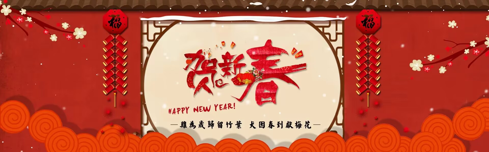
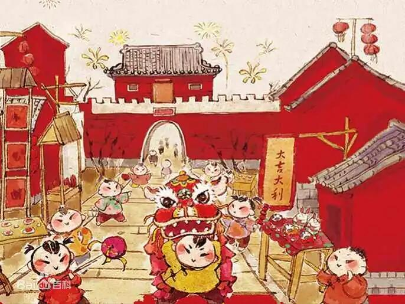
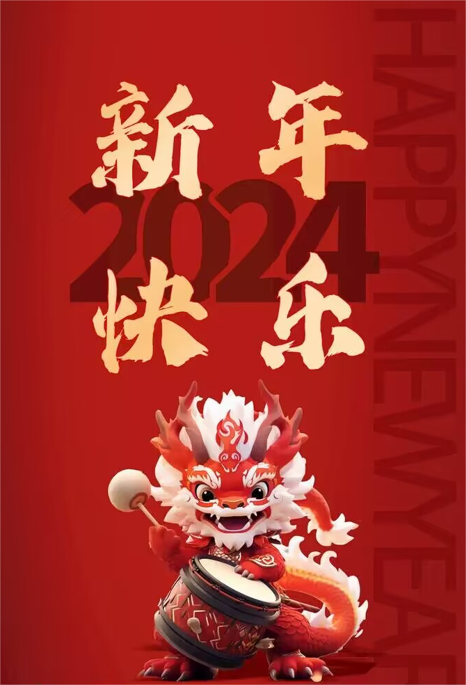

春 节


春节，即中国农历新年，俗称“新春”“新岁”“岁旦”等，又称“过年”“过大年”，是集除旧
布新、拜神祭祖、祈福辟邪、亲朋团圆、欢庆娱乐和饮食为一体的民俗大节。
春节历史悠久，起源于早期人类的原始信仰与自然崇拜，由上古时代岁首祈岁祭祀演变而来。万物
本乎天、人本乎祖，祈岁祭祀、敬天法祖，报本反始也。春节的起源蕴含着深邃的文化内涵，在传承发
展中承载了丰厚的历史文化底蕴。在春节期间，全国各地均有举行各种庆贺新春活动，带有浓郁的各地
地方特色。百节年为首、四季春为先，春节是中华民族最隆重的传统佳节。
在传统的农耕社会，春回大地、终而复始、万象更新的立春岁首具有重要意义，衍生了大量与之相
关的岁首节俗文化。虽然此后由于在历史发展中阴阳合历历法制度的推广，岁首节庆日期不同，但是其
节庆框架以及许多民俗沿承了下来。春节是由岁首祈岁祭祀演变而来，古人在春回大地、终而复始、万
象更新的岁首，举行祭祀活动报祭天地众神、祖先的恩德，驱邪攘灾、祈岁纳福。古代的祭仪情形虽渺
茫难晓，但还是可以从后世的节仪中寻找到一些古俗遗迹。如岭南部分地区沿承有在新年初一拜岁以及
新年期间隆重盛大的拜神祭祖、驱邪纳福节仪活动，由此可见上古时代岁首祭祀的蛛丝马迹。春节的起
源和发展是逐渐形成，潜移默化地完善与普及的过程。春节文化作为中华传统文化的重要组成部分，承
载着博大精深的中华文化底蕴，也记录着古代人们丰富多彩的社会生活文化内容。
在现代，人们把春节定于农历正月初一，但一般至少到正月十五新年才算结束。